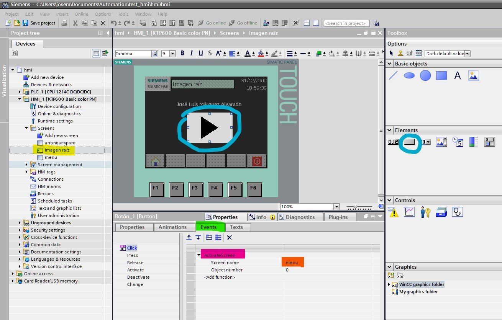
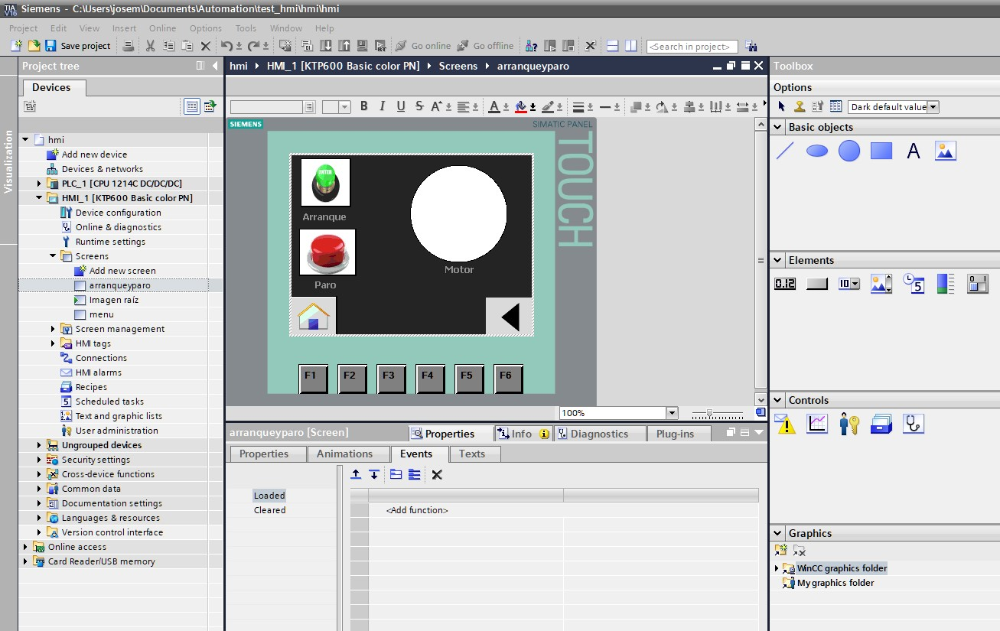
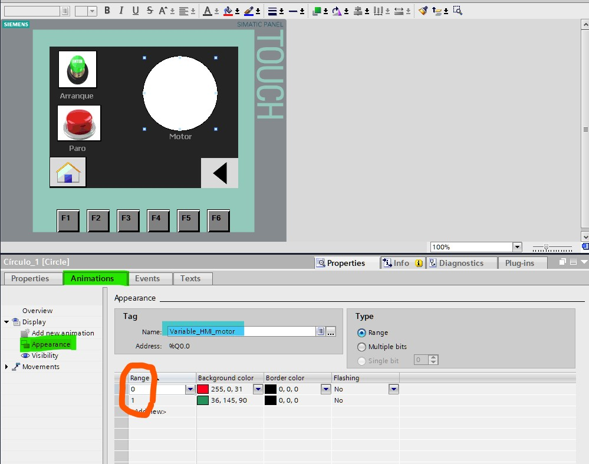

5. Creación de interfaz HMI
5.1 Creación y edición de ventanas de interfaz HMI
- Dirijase a su arbol de proyectos y despliegue la carpeta de HMI, Despliegue la carpteta de
Screens(enmaracada en color naranja) y presione le botónAdd new screen(enmarcada en color verde); posteriormente modifique los nombres de cada uno de los archivos que ha creado. La ventana raiz se le ha a recibido el nombre deimagen raiz; las otras dos cualesquiera recibe una el nombre dearranqueyparoy la otramenu.

- Siga los siguientes pasos para añadir botones a su interfaz con interactividad entre ventanas:
- Abra su archivo
imagen raiz(enmarcada en color amarillo) - En el panel de
Toolboxarrastre el icono de botón (encerrado en azul) y arrastrelo a su pantalla. - En el panel de coonfiguración que se encuentra en la parte inferior de su programa puede seleccionar propiedades para añadir un icono si usted gusta o u texto.
- Dirijase a la ventana de eventos (encerrada en color verde) y en las seleccione la opción de
Click. - Seleccione un evento llamado
ActivateEventy en el campo descreen nameselecciones la ventana demenuque ya ha creado con anterioridad.
- Abra su archivo

- Usted puede modificar de forma similar la ventana de
menuy añadir el titulo deArranque y paroa su botón. No olvide añadir un botón más para regresar a la ventana raíz.

- Añada 4 botones a la ventana de
arranqueyparo, dos para actualizar el estado de arranque y paro, uno para regresar a la ventanamenuy otro para regresar a la ventana raíz (imagen raiz); Anexe un elemento de circulo que fungirá como indicador cuando el motor esté encendido o apagado.

5.2 Configuración de botones de arranque-paro en interfaz HMI
- Seleccione el botón verde y en la parte inferiór dirijase a los eventos del mismo elemento, seleccione la opción
Pressy le mostrará una lista para agregar eventos, busque la opciónSetBity agregue aTag (input/outputel valor deVariable_HMI_arranque.

Realice pasos similares en la opción de Release, seleccione la acción como ResetBit y agregue a Tag (input/output el valor de Variable_HMI_paro.
- Realice pasos similares para el botón rojo (paro) de acuerdo con las siguientes imagenes.


- Finalmente configure en
animationsy en el árbol de opcionesAppearancecomo se muestra en la siguiente imagen.
